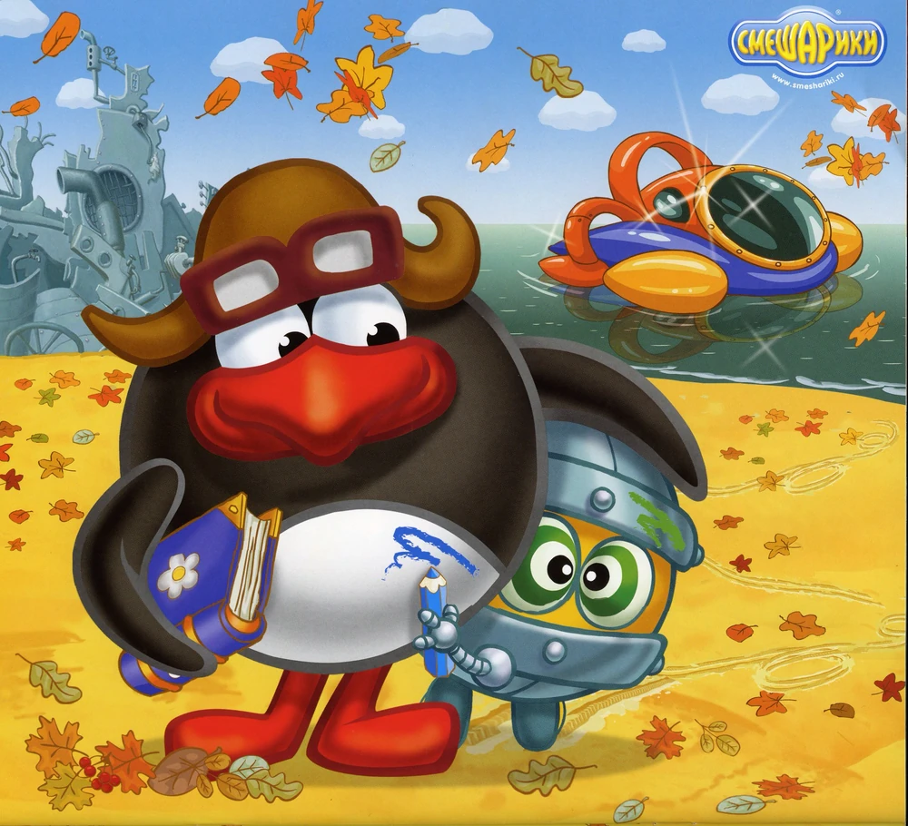

Пин — один из главных персонажей мультипликационной франшизы «Смешарики», изобретатель-самоучка. Виртуоз в своих железных изобретениях. Пин — иностранец, поэтому и говорит он с заметным немецким акцентом. Сдержан в эмоциях, он чопорен и щепетилен даже в мелочах и любит учиться на ошибках («Последняя ошибка Пина»). Впустую говорить не любит, считает, что если что-то сказать, то обязательно к месту.